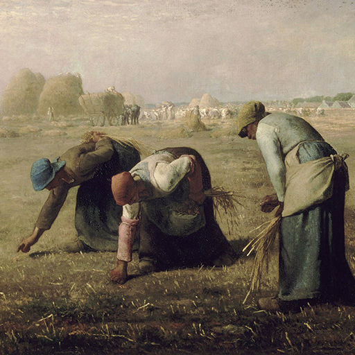

Hexagram 2 – Kun: Mother Earth
Upper: Earth (☷) · Lower: Earth (☷)

Core Meaning
Earth supports everything without force. This is not weakness, but quiet strength: stay open, steady, and willing to support what is growing. When your foundation is solid, life can develop naturally around you.
“I stay grounded and open, allowing life to grow at its own pace.”
Blessing
May you stay gentle and grounded, support what life brings, and allow yourself to receive support too.
Wisdom of the Line (Yong Liu)
Steady kindness and patience create lasting stability. By making room for life as it is, you move toward deeper security and abundance.
Guidance by Life Area
Love
Your patience and care can give the relationship a strong foundation. Support the other person, but remember that your needs deserve support as well.
Be patient and considerate with each other:
- Remember that you also deserve care and support.
- Let love deepen through mutual support.
Career
This is a time for steady, reliable work rather than chasing attention. Do your part well, support the team, and let trust build through consistency.
Do your core work well and support the team's success:
- Let your ability be seen without chasing attention.
- Become someone others can rely on.
Health
Your body benefits from a stable rhythm more than drastic changes. Focus on regular sleep, food, and movement, and let recovery happen gradually.
Care for your body in a gentle, consistent way:
- Start with basic sleep and eating habits.
- Give your body a stable setting for recovery.
Finances
Build wealth slowly and steadily. Consistent saving, sensible investing, and avoiding unnecessary risk will strengthen your financial base over time.
Save and invest steadily rather than chasing quick results:
- Avoid aggressive, high-risk moves.
- Let time do part of the work.
Relationships
Your patience and warmth make people feel safe around you. Keep listening and supporting others, but set healthy boundaries so your kindness stays sustainable.
Listen and offer support when it is useful:
- Set boundaries so kindness does not become exhaustion.
- Make mutual support the basis of connection.